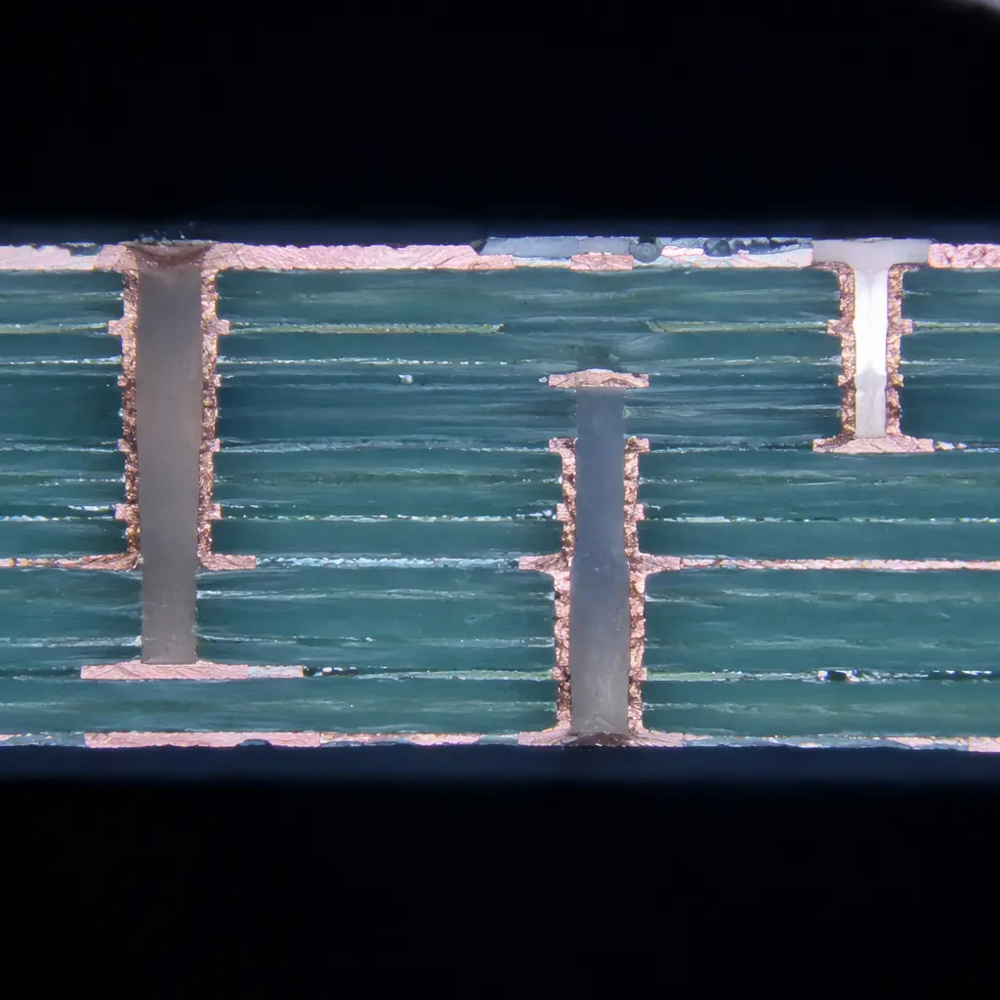

When you approve a PCB supplier and place your first production order — whether it's 500 units or 50,000 — there's a single document that stands between you and a container full of scrap: the First Article Inspection report. FAI is the gate that catches process deviations, material substitutions, and outright manufacturing errors before they propagate across an entire batch. Yet most procurement teams treat FAI as a checkbox exercise — "the factory sent a report, so we're good." That approach is expensive. A 2025 industry survey by IPC found that 63% of field failures traced back to deviations that a proper FAI would have caught at unit #1.
This guide is written for the procurement manager, the quality engineer, and the supply chain lead who needs to read an FAI report the way a PCB factory quality manager reads it — not as a formality, but as a forensic tool. At Huaxing PCBA, we run FAI on 100% of new customer orders across 8 SMT lines, and our first-pass yield after FAI approval exceeds 98.7%. Here's how to make FAI work for you.
What FAI Actually Covers — Beyond the Checklist
First Article Inspection for PCBs isn't one test — it's a structured verification protocol that spans dimensional, electrical, material, and visual domains. The industry standard reference is IPC-A-600 (acceptability of printed boards), but a real FAI goes further:
Dimensional Verification — Board Outline, Thickness, and Hole Registration
The first thing measured: does the physical board match the Gerber data? Tolerances matter here. A board that's 0.2 mm thicker than specified won't fit the enclosure. Hole registration drift of even 0.1 mm causes misalignment in press-fit connectors. IPC-A-600 Class 2 allows ±10% thickness tolerance; Class 3 tightens this to ±5%. A proper FAI report includes a coordinate-measuring machine (CMM) readout showing actual vs. nominal for outline, slot positions, and at least 5 critical hole locations. Board geometry errors also affect trace impedance — a 0.05 mm etch variation shifts impedance by 3-5% on controlled-impedance traces.
Microsection Analysis — Copper Thickness, Plating Uniformity, and Inner-Layer Registration
Microsectioning is the gold standard for verifying what's inside the board. A cross-section is cut through a plated via or critical trace, polished, and examined at 100-200× magnification. The report should quantify: copper plating thickness in the via barrel (minimum 20 μm for Class 2, 25 μm for Class 3 per IPC-6012), inner-layer copper thickness vs. starting foil weight, dielectric thickness between layers (critical for controlled impedance), and annular ring — the copper pad surrounding a drilled hole. An annular ring below 50 μm is a red flag. Our microsection analysis guide covers interpretation in detail.
Solderability Testing — Wetting Balance and Dip-and-Look
A board that passes dimensional checks but fails solderability is a production-line disaster. FAI should include a solderability test — either wetting balance (quantitative, measures wetting force over time) or dip-and-look per IPC-J-STD-003. The test verifies that surface finishes (ENIG, HASL, OSP, immersion silver) haven't degraded during storage or handling. A wetting force below 150 μN/mm at 2 seconds is a failure. Surface finish selection directly impacts solderability shelf life — ENIG typically maintains solderability for 12 months vs. 6 months for OSP.
Electrical Test — Continuity, Isolation, and Impedance
Electrical test (E-test) verifies that every net connects where it should and isolates where it shouldn't. Flying probe or bed-of-nails — either method must cover 100% of nets. For controlled-impedance boards, FAI must include TDR (Time Domain Reflectometry) measurements on impedance coupons. A 50 Ω single-ended trace should measure between 45-55 Ω (±10%); differential 100 Ω pairs should land at 90-110 Ω. Any coupon outside this range means the entire batch is suspect — impedance deviations correlate with laminate thickness variations or etch inconsistencies that affect every board in the panel. Our impedance control guide explains why even 5 Ω deviation can cause signal integrity failures above 3 Gbps.
Solder Mask and Legend Inspection — Registration, Cure, and Adhesion
Solder mask misregistration exceeding 75 μm causes solder bridging on fine-pitch components. FAI should check mask-to-pad alignment under 40× magnification, verify cure completeness (scratch test with a pencil hardness tester — 6H minimum per IPC-SM-840), and confirm legend legibility on at least 5 reference designators. Different solder mask types (LPI, dry film, UV-curable) have different adhesion characteristics — LPI photoimageable is the standard for pitches below 0.5 mm.
Procurement Reality: A proper FAI takes 4-8 hours of lab time. If your supplier sends an FAI report 2 hours after shipping samples, they're cutting corners. The fastest credible FAI turnaround with in-house lab capability is 24 hours from sample completion — less than that means someone skipped microsectioning or solderability testing.

The 5 Most Common FAI Failures — and What They Cost You
Understanding where FAI fails tells you where to focus your own inspection. Based on analysis of 1,200+ first-article inspections across multiple PCB factories, these are the most frequent non-conformances:
| Failure Mode | Frequency | Root Cause | Line Impact |
|---|---|---|---|
| Annular ring below minimum | 24% | Drill registration drift or layer-to-layer misalignment | Rework impossible — board scrap |
| Solder mask slivers / peeling | 18% | Underexposure, undercure, or pad-to-mask clearance too tight | Reworkable but adds 15-30 min/panel |
| Via plating void or thin spot | 16% | Poor throwing power in plating bath, air bubble entrapment | Board scrap — void propagates thermal stress cracks |
| Impedance out of tolerance | 14% | Laminate thickness variation, incorrect prepreg selection | Batch quarantine — re-test all panels |
| Surface finish contamination / dewetting | 12% | Residual plating chemistry, storage humidity >60% RH | Strip and re-plate — 24h delay |
Annular ring failures alone account for nearly a quarter of all FAI rejections. They're also the hardest to detect without microsectioning — visual inspection at the surface can't reveal what's happening in inner layers. This is why drilling method (laser vs. mechanical) and registration capability (±50 μm for laser, ±75 μm for mechanical) directly affect FAI pass rates.
How to Structure an FAI Acceptance Protocol With Your Supplier
The most effective FAI programs are collaborative — not adversarial. Here's a framework that works across supplier relationships:
Define Acceptance Criteria Before the PO
Don't negotiate quality after the order is placed. Attach an FAI requirements document to the RFQ that specifies: which IPC class applies (Class 2 or Class 3), which tests are mandatory (microsection, solderability, impedance — not optional), the sample size (minimum 2 boards from 2 different panels), and the reporting format (PDF with annotated micrographs, CMM data in CSV). Suppliers who push back on FAI requirements at the RFQ stage are telling you something about their quality culture. Our supplier audit guide covers how to assess this during factory visits.
Require Golden Board Sign-Off — Not Just a Report
A PDF report is easy to generate and easy to ignore. The gold standard is a physical "golden board" — an approved first article board that both parties sign off on and retain for reference. This board becomes the visual standard for all subsequent production. Any deviation from the golden board's appearance (solder mask color, legend placement, surface finish hue) triggers a re-FAI. At Huaxing PCBA, we retain golden boards for 36 months for repeat orders.
Separate Process FAI from Product FAI
Process FAI validates the manufacturing capability — can this factory produce this technology level at all? Product FAI validates the specific design — does this particular PCB meet spec? Both are necessary but serve different purposes. Process FAI is done once per supplier; product FAI is done per part number per initial production run. Combine them and you'll miss process-level issues that affect every board the factory makes. A supplier scorecard should track FAI pass rates separately for process vs. product.
Build Remediation Into the Contract
What happens when FAI fails? If the contract doesn't specify, the default answer is "delay." Specify: supplier has 72 hours to submit a corrective action report (CAR) identifying root cause; re-FAI at supplier's cost within 5 working days; if second FAI fails, you have the right to cancel without penalty. This structure incentivizes getting it right the first time. If you're transitioning suppliers, build FAI milestones into the qualification timeline.
Data Point: Suppliers with in-house microsection labs achieve FAI first-pass rates of 91-94%. Suppliers who outsource microsectioning to third-party labs average 78-82%. The difference is feedback loop speed — in-house labs turn around results in hours, enabling real-time process correction.
FAI for Different PCB Technologies — What Changes
Not all FAI protocols are the same. Technology complexity drives additional inspection requirements:
| Technology | Additional FAI Requirements | Typical FAI Duration |
|---|---|---|
| Standard 2-4 layer FR-4 | Dimensional, visual, E-test, solder mask | 4-6 hours |
| HDI with microvias | + Microvia cross-section at 500×, via fill verification | 8-12 hours |
| Controlled impedance (≥4 layers) | + TDR on all impedance coupons, dielectric thickness verification | 6-10 hours |
| Rigid-Flex | + Flex bend radius verification, coverlay adhesion peel test | 10-16 hours |
| Heavy copper (≥3 oz) | + Copper thickness at 5 locations, plating uniformity check | 6-8 hours |
| Metal-core / IMS | + Dielectric thermal conductivity verification, isolation voltage test | 8-12 hours |
For HDI boards, microvia reliability is the single highest-risk item. A single unfilled or cracked microvia can cause an open circuit after thermal cycling — and visual inspection at the surface won't catch it. Our HDI technology guide explains the microvia stacking and filling processes that FAI must verify.
Reading an FAI Report Like a Quality Engineer
When the FAI report lands in your inbox, here's what to look for before you sign off:
Check the Date Stamps on Micrographs
Microsection images should include a timestamp and scale bar. If the timestamps are all within a 30-minute window, the lab rushed through the analysis. A proper microsection sequence — cut, mount, grind, polish, etch, image, measure — takes 15-20 minutes per section. Four sections in 30 minutes means shortcuts.
Verify Measurement Resolution Matches Tolerance
If the spec calls for ±25 μm on copper thickness but the report only shows measurements to the nearest 10 μm, the measurement system isn't capable of verifying the tolerance. Measurement resolution should be at least 10× finer than the tolerance band — so a ±25 μm tolerance requires 2.5 μm resolution (round to 1 μm for practical CMM capability).
Look for "Pass" Without Numerical Values
Any FAI line item that says "Pass" without the actual measured value is a red flag. "Solder mask thickness: Pass" is meaningless — the spec requires 10-25 μm dry film thickness, and you need the number. If the report doesn't provide it, ask for the raw measurement data.
Summary: FAI is Your Production Insurance Policy
First Article Inspection is the cheapest quality insurance you can buy. The cost of a comprehensive FAI — typically $200-500 depending on technology complexity — is a fraction of the cost of discovering a systemic defect after 10,000 units ship. Yet many buyers skip it or accept superficial reports because FAI requirements weren't specified in the RFQ. The takeaway: make FAI a line item in your purchase order, define acceptance criteria before production starts, and insist on microsection and electrical data — not just visual inspection. The suppliers who welcome rigorous FAI are the ones you want as long-term partners.
At Huaxing PCBA, we include FAI reporting as standard on every new customer order — microsection, solderability, impedance, and dimensional verification with full measurement data, not pass/fail summaries. Our in-house lab with 3 CMM stations, cross-section capability, and TDR equipment delivers FAI reports with the granularity that serious procurement teams demand. Read our incoming quality inspection guide for how to extend quality control across your full supply chain, or contact our engineering team to discuss your specific FAI requirements.